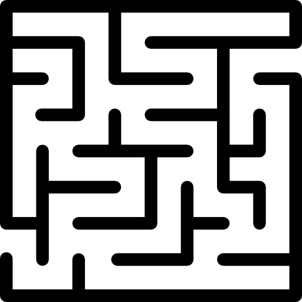
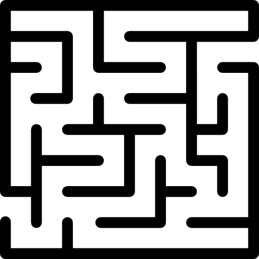

Cartes
- A la fin de votre tour, vous devrez n'avoir que 2 cartes en main maximum. Défaussez-en le cas échéant.
- Les cartes ne peuvent être défaussés que pendant votre tour.
- Les Steufs et les Consommable ont une valeur d'échange en Or, symbolisé par
- Les Steufs et les Consommable peuvent être gardés en main plutôt que jouer directement.
- Les Steufs, Consommables et Lieux pourront avoir des effets actifs et passifs.
- Les actifs sont symbolisés par ∾ ► ;
Personnage
- Les Personnages sont répartis sur deux axes : Moralité et Ordre.
- Moralité : Bon - Neutre - Mauvais
- Ordre : Loyal
 - Neutre
- Neutre  - Chaotique 
- Chaotique 
- Ces deux axes intéragiront avec certaines Cartes.
- Exemple : tous les Bon sont soignés d'une Blessure.
Blessure
- Le compteur de Blessure désigne la capacité maximale à prendre des dégâts.
- Lorsque vous parvenez à votre nombre maximale de Blessure, vous déplacez votre pion sur l'emplacement Seuil de la Mort (abrégé en SdM ou < icone >).
- Lorsqu'un Personnage est au SdM :
- Il ne peut pas attaquer d'autres Personnages.
- Pour quitter cet état, il lui suffit de vous soigner d'une Blessure. Alors votre nombre de Blessure serait votre compteur de Blessure - 1.
- Une Blessure infligée alors que vous êtes au SdM ne change rien à votre compteur de Blessure ni au soin nécessaire pour en sortir.
- Néanmoins, elle est prise en compte pour les Cartes qui devraient intéragir avec la Blessure infligée.
Révélation du Personnage
- Tant qu'un Personnage est face cachée, il ne peut pas bénéficier de ses passifs ni de ses actifs.
- Attaquer un autre Personnage ne fait pas réveler votre Personnage, ni le sien.
- Vous pouvez réveler votre Personnage à tout moment, vous ne pourrez plus le remettre face cachée une fois révélé.
- Lorsqu'il est au SdM, un Personnage doit retourner sa carte face visible.
Steuf
- Vous ne pouvez équiper un Steuf que durant votre tour.
- Les Steufs ont plusieurs rangs de rareté : Commun, Rare, Épique et Légendaire.
- Lorsque vous piochez un Steuf Légendaire, vous devrez l'équiper ou le défausser immédiatement.
- Les Personnages ne peuvent équiper qu'un seul Steuf Légendaire à la fois, un des deux devra être défaussé.
- Pour bénéficier de ses actifs et passifs, le Steuf doit être équipé.
- Certains Steufs disposent d'actifs ou de passifs avec charges d'utilisations.
- Une charge est utilisée par activation de l'actif / du passif. Lorsque le compteur de charge arrive à zéro, le Steuf est envoyé en défausse.
Consommable
Lieu